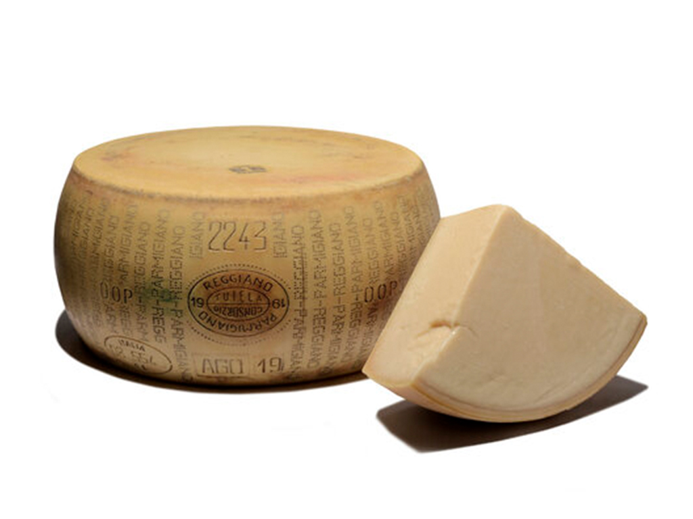

SajtOK - A Sajtok birodalma!
Parmezán (Parmigiano Reggiano)
- Eredet: Olaszország, Emilia-Romagna régió.
- Elkészítési mód: A parmezán tehéntejből készül, különleges bakteriosztatikus baktériumkultúrával. A tejet először kicsapják, majd sajtformákba öntik és hosszú ideig, legalább 12 hónapig érlelik, de akár 24-36 hónapig is érlelhetik, hogy jellegzetes, erőteljes aromát kapjon.
- Tárolás: Hűvös, száraz helyen, légmentesen lezárva tárolják. Ha már felvágták, érdemes hűtőben tartani, jól becsomagolva, hogy ne száradjon ki.
- Érdekesség: A parmezán olyan kemény, hogy könnyen reszelhető, és sok olasz étel nélkülözhetetlen összetevője, kiváló tésztákhoz, salátákhoz és levesekhez.
